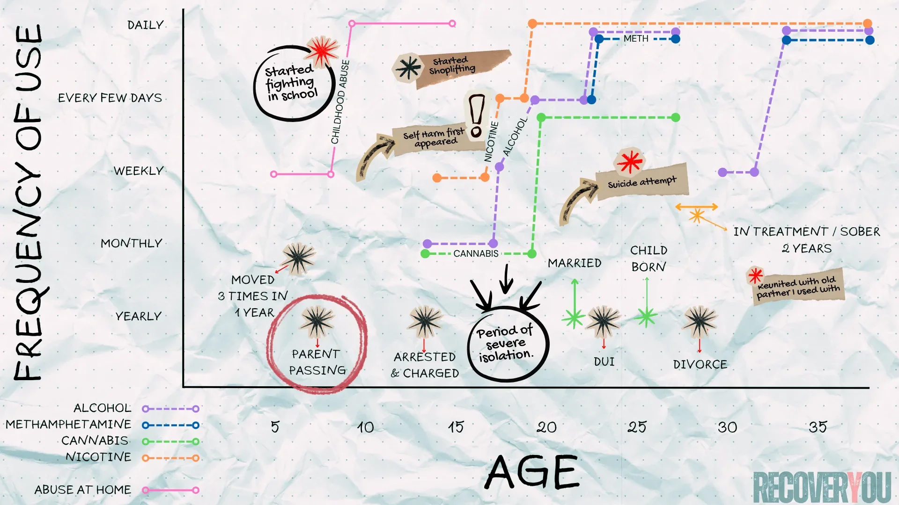

This exercise can be uncomfortable.
It asks you to look back at things you may have spent years trying not to look at — memories tied to trauma, shame, regret, or loss. This isn't about reliving those moments or writing them out in detail. You're simply acknowledging them and placing them on the timeline. If you need distance, use vague labels: "The Event," "That Period," "That Year." As long as you know what they mean, they'll do the job. The goal is visual clarity, not emotional excavation.
If you're feeling vulnerable about revisiting your past, don't do this alone. Bring a counsellor, therapist, sponsor, or someone you genuinely trust into the process. And if at any point it becomes too much — stop. You can return to it when you're ready, or work through it with support. Your safety matters more than finishing the exercise. The point was never to relive the pain. It's to finally understand it.
This exercise turns your personal history into a visual map. You'll need graph paper (or the printable PDF below), a pen, and a few different coloured markers or highlighters. Two axes: the X-axis (horizontal) represents your age, from early childhood to now. The Y-axis (vertical) represents frequency or intensity of use or behaviour, from "none" at the bottom to "constant" at the top. Don't get hung up on exact dates or precise numbers. Approximate honestly. The goal isn't accuracy for its own sake — it's pattern recognition.
What you're doing here is converting chaos into clarity. When patterns take shape on paper, they stop feeling random — and start feeling understandable.
You'll layer several categories on the same chart:
Below is a fictional example of what a completed chart might look like. Fill it out in whatever way works best for you — these are guidelines, not rules. If something feels relevant, put it in, even if you're not sure why. Sometimes the connection only becomes visible once it's on the page.

W hen I completed my chart in treatment, the first thing that hit me was how almost every spike in use lined up with a life event. I already knew about each event. I already knew about each escalation. But seeing them overlap on paper made the connection impossible to ignore. It was painful — and strangely relieving — because it meant there was usually a reason. A driver. Not an excuse, but a cause. Some fluctuations didn't have a clear explanation, which probably came down to memory gaps, missing context, or the fog that comes with years of use. That was fine. Perfect accuracy was never the point. Honesty was.
When I added the cross-addictions, the picture got sharper. I could see my brain doing what it had always done — reaching for something, anything, whenever life became too much to sit with. But what shifted everything was tracking the behavioural patterns. Not the substances. The behaviours. One of the lines I charted was lying and manipulation — something I'd always blamed on the addiction. I assumed it started with using. But the further I sat with the chart, the further back that line went. It didn't start with addiction. It started in childhood. It formed in survival. That realisation was uncomfortable. It was also the most clarifying thing I'd seen in years.
Maybe your chart tells a similar story. Maybe it reveals something entirely different. Maybe you won't see any clear pattern at first — and if that's where you land, take a long honest look at everything you've mapped and recognize it for what it is: a record of what you've carried. The good, the devastating, and the ugly-as-hell. And yet here you are, still in it. Either way, the data tells the truth. And truth is where understanding starts.
We repeat what we don’t repair.
Not because we want to — but because it’s what the system knows.
— Adapted Clinical Insight
Reducing your life to data points is confronting. I remember staring at my finished chart and feeling a heaviness I hadn't expected. There were no "got married" or "bought a house" markers — just trauma, loss, and use. That wasn't the fault of the exercise. It was just the honest shape of my story at that point in time.
But seeing it laid out gave me something I'd never had before — a throughline. For the first time I could actually trace how I became who I was, and why certain ways of coping had taken such deep root. A blur of fragmented memories became a coherent sequence I could study, learn from, and eventually start changing.
This chart is a tool, not a verdict. It explains your story. It does not define your future.
The brain processes visual information differently than language. Translating your story into an image bypasses the usual defenses — the rationalizations, the minimizing, the "it wasn't that bad." Patterns that were invisible become visible. And visibility creates accountability in a way that thinking about it, or even talking about it, often doesn't.
For many of us, it's the first time we can literally see the connection between trauma and behaviour. Once you see it, you can't unsee it. And that's usually where something real begins to shift.
Neuroscience note: Translating experience into visual formats activates areas of the brain involved in spatial reasoning and emotional integration, including the hippocampus and prefrontal cortex. This bridge between implicit emotional memory and explicit understanding is a core element in many trauma-informed approaches — it's part of why getting it out of your head and onto the page makes it feel less like chaos and more like something you can actually work with.
You have the framework. The rest comes down to honesty, patience, and a willingness to look at your story without flinching. This isn't punishment — it's data collection. A sample chart, a printable PDF, and a step-by-step instruction sheet are linked below. When you're ready, find somewhere quiet, take a breath, and start. You're not creating art. You're mapping reality — the actual sequence of events, patterns, and responses that brought you to this moment.
One thing before you begin: this chart is for insight, not ammunition. Don't use it against yourself, and don't use it against anyone else. If you're sitting down to do this — or supporting someone who is — that's an act of courage. Treat it accordingly. The goal is to understand the system you've been surviving in. Not to pile more shame onto how you survived it.
When I finished my own chart, I felt gutted. On paper it looked like tragedy stacked on tragedy. But underneath that, it was data. The lines didn't just trace damage — they traced adaptation, survival, persistence. Every desperate move my nervous system made to keep me alive with whatever tools it had at the time. Seeing it all rendered as a visual sequence was unexpectedly grounding. I wasn't random. I wasn't hopeless. I was predictable, reactive, human. And that was the first time that felt like something I could work with.
That's what this exercise is really for. Not to shame the person in the story — to finally study the pattern. When you chart your addiction alongside trauma, relationships, beliefs, and behaviours, something shifts in how you relate to your own history. You stop being only the subject of the experiment. You become the researcher. And from that position, you're in a far better place to decide what actually needs to change next.
When you're ready — use the PDF above, map it honestly, and sit with what it shows you. Not because you're broken. Because your story deserves to make sense.
Follow the next step in order, or branch out into related topics.